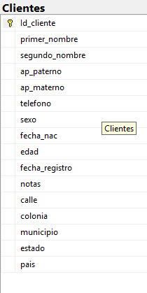

Diagrama de la tabla en la base de datos
Registrar y administrar los datos de clientes, mediante un sistema centralizado, para identificar, contactar y dar seguimiento personalizado a los servicios realizados dentro del negocio de reparación.
La tabla Clientes está normalizada porque cumple con:
CREATE TABLE Clientes (
Id_cliente INT IDENTITY(1,1) PRIMARY KEY,
primer_nombre VARCHAR(50) NOT NULL,
segundo_nombre VARCHAR(50) NULL,
ap_paterno VARCHAR(50) NOT NULL,
ap_materno VARCHAR(50) NULL,
telefono VARCHAR(20),
calle VARCHAR(100),
colonia VARCHAR(100),
municipio VARCHAR(100),
estado VARCHAR(100),
pais VARCHAR(50),
sexo VARCHAR(20) CHECK (sexo IN ('hombre','mujer','prefiero no decirlo')),
fecha_nac DATE NOT NULL,
edad AS DATEDIFF(YEAR, fecha_nac, GETDATE()), -- campo calculado
fecha_registro DATETIME DEFAULT GETDATE(),
notas VARCHAR(MAX)
);
INSERT INTO Clientes (
primer_nombre, segundo_nombre, ap_paterno, ap_materno, telefono,
calle, colonia, municipio, estado, pais, sexo, fecha_nac, notas
)
VALUES
('Ana', 'María', 'Ramírez', 'López', '555-000-1111',
'Calle 1 #123', 'Centro', 'Toluca', 'México', 'México', 'mujer', '1990-05-12', 'Cliente frecuente'),
('Luis', NULL, 'Mora', 'González', '555-000-2222',
'Calle 2 #456', 'La Merced', 'Toluca', 'México', 'México', 'hombre', '1985-11-23', 'Prefiere contacto por email'),
('Carla', 'Elena', 'Sánchez', 'Ramírez', '555-000-3333',
'Avenida Central #789', 'San Juan', 'Toluca', 'México', 'México', 'mujer', '1992-07-15', 'Cliente nuevo'),
('Jorge', 'Alberto', 'Gutiérrez', 'Hernández', '555-000-4444',
'Boulevard Independencia #101', 'Santa María', 'Toluca', 'México', 'México', 'hombre', '1980-02-28', 'Cliente VIP');